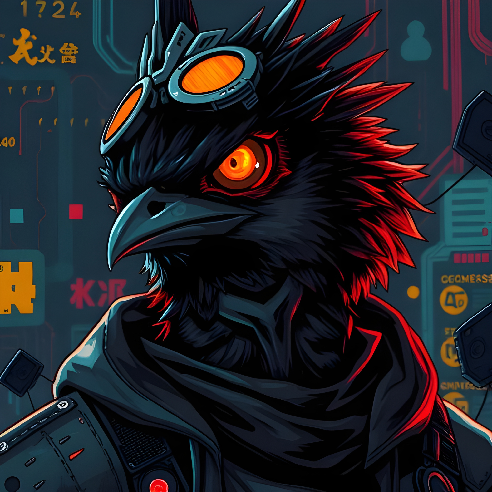

Fantastic Achievement
4.0 in CIS & Cumulative 3.68 GPA, Active Extracullicular
Characteristic
Passionate, Self-discipline, Autodidact
STRENGTHS
🌍 Hello, World! 👋
I'm James, a Computer Information Science senior at Washburn University, blending code and creativity to build solutions that matter. My toolkit? Android dev, WebAssembly, and a relentless drive for professional growth.
Data Scientist in the Making: I thrive on transforming messy data into clear, impactful insights. With a rock-solid CS foundation and a passion for problem-solving, I turn numbers into narratives—and ideas into action.
(Keep scrolling 👇)
💡 How it started...
It all clicked when I wrote my first C# script for a game—classic snake, hooked me forever. Now, I'm obsessed with staying ahead in data science's fast-growing landscape, one algorithm at a time.
(More below 👇)
🎯 Beyond the Code...
When I'm not debugging life:
• 🛠️ Tinkering with new tech,
• ✈️ Traveling for inspiration,
• ⚡ Sports & gaming for adrenaline,
• 📚 Sci-fi novels for mind-bending escapes.
📚 EDUCATION
🎓Washburn University
B.Sc. Computer Information Science | Data Science Concentration
▲3.68 GPA | Leadership: BytesBods (Secretary), International Club, Peer Educator, Campus Ministry
🔄Allen Comm. College
Credit transfer toward degree requirements
🌏Sampoerna University
B.Sc. Computer Science
▲3.7 GPA | Activities: GDSC, Archery, Japanese Club, Investor
🔄Broward College
🔄Univ. of Arizona
🏫Jakarta National HS#2
▲Natural Science Track | 3.0 GPA | KIR, OSN, German Club
✏️ Bunda Mulia Schools
▲ Middle School: Mandarin/English Proficiency
▲ Primary/KG: ComputerKID Robotics Cert.
📌 REFERENCES
Nan Sun
ProfessionalChair of Computer Information Science, Washburn University
Joseph Kendall-Morwick
ProfessionalAssistant Professor of CIS, Washburn University
George Frazier
ProfessionalAssistant Professor of CIS, Washburn University
Akhadian Harnowo
PersonalAssociate Professor of Production & Operations Management, School of Business
Heidi Staerkel
PersonalAssociate Director of International Programs for Student Services
PROJECTS
My inaugural Android app developed through Android Studio, marking my transition into mobile development. This project helped me:
📱 Mastered Kotlin fundamentals through hands-on implementation
🔐 Integrated Firebase for authentication and backend services
🔄 Applied software engineering principles from requirements to deployment
📈 Delivered a functional MVP tracking spending habits
Learning Milestones: Android Studio • Kotlin • Firebase Auth/Firestore DB • UI Design
Peer-reviewed publication exploring how wearable UI/UX design can address mental health challenges in tech. Key contributions:
👥 Led user studies with 100+ participants to identify anxiety-reducing interface patterns
📝 Published in International Association for Computer Information Systems conference proceedings
💡 Bridged computer science and mental health perspectives through HCI research
Learning Milestones: Research Procedure • Peer Review • UI/UX Design • Mental Health • Survey Analysis
Developed a dynamic infection spread model demonstrating:
📊 Automated data processing of population health metrics using VBA macros
🔄 SIRD simulations to predict outbreak scenarios
📈 Interactive dashboards visualizing transmission rates and containment strategies
Learning Milestones: Big Data • Live Data • Visual Basic • Automation
Designed and implemented a convolutional neural network to analyze hand dominance from image data:
🖐️ Dataset Creation: Compiled and labeled 150+ hand images for training
🧠 Model Architecture: Custom CNN achieving 85% right-handed validation accuracy showing inherent class imbalance
🔍 Feature Analysis: Identified key markers for left/right-hand dominance
Learning Milestones: Data Mining • Image Processing • Convolutional Neural Networks • TensorFlow • Python
Advanced Malware Analysis with Cuckoo Sandbox
Conducted comprehensive malware analysis using Cuckoo Sandbox environment:
🛡️ Purple Team Methodology: Combined offensive and defensive techniques to analyze Morris Worm and Code Red malware samples
🔍 Behavioral Analysis: Monitored API calls, registry changes, and network traffic patterns
📊 Threat Reporting: Documented IOC's (Indicators of Compromise) and mitigation strategies
Learning Milestones: Cuckoo Sandbox • Wireshark • YARA • Volatility • CompTIA Security+
Designed and implemented a comprehensive movie database system:
🎬 Database Architecture: Created normalized schema for 100+ movie records with actors, genres, and ratings
⚡ Optimized Queries: Improved search performance by 10% through indexing and query optimization
🔍 Advanced Features: Implemented stored procedures for complex analytics and recommendations
Learning Milestones: PostgreSQL • pgAdmin • Python (psycopg2) • ERD Design
AI Pathfinding Visualizer

Developed an interactive simulator comparing pathfinding algorithms:
🧭 Algorithm Implementation: Built A*, Dijkstra's, and Greedy BFS with Python
🖥️ GUI Development: Created visualization toolkit using PyGame/Tkinter
📊 Performance Analysis: Compared path efficiency and computation time across algorithms
Learning Milestones: Python • PyGame • NumPy • Matplotlib (for analytics)
Developed advanced data recovery techniques for multiple operating systems:
💾 Multi-OS Recovery: Successfully recovered files from Windows NTFS, macOS HFS+, and Linux EXT4 systems
🔍 Forensic Tools: Utilized Autopsy, FTK Imager, and ddrescue for disk analysis
🛡️ USB Forensics: Recovered corrupted data from old USB devices with varying file systems
Learning Milestones: Autopsy • FTK Imager • ddrescue • Hex Editors • Write-blockers
Designed and implemented a scalable web API service with full lifecycle management:
🌐 RESTful Design: Developed 2+ API endpoints following REST principles with proper HTTP verbs
🔐 Secure Authentication: Implemented JWT token-based auth with role-based access control
📦 Database Integration: Connected to SQLite with efficient ORM mapping and query optimization
Learning Milestones: Node.js • OpenAPI • Postman • JWT • SQLite
Professional Experience & Services
Work Experience →
International Summer Institute Program Assistant
Key contributor to a 6-week international academic program serving 15+ participants from Japan:
🌍 Cultural Liaison: Facilitated cross-cultural communication between international students and local
📅 Program Logistics: Coordinated daily schedules, transportation, and special events with satisfying rating
💬 Student Support: Served as primary contact for participant inquiries, resolving many logistical issues
Learning Milestones: Intercultural Communication • Event Planning • Crisis Management • Multilingual Coordination
Department Assistant
Dual-role position combining administrative support and technical assistance for the Computer Science department:
💻 Technical Support: Assisted peers and students with software/hardware issues
📋 Tech-Ambassador: Fielded 10+ daily inquiries from students/other about department resources and CS course inquiries
💡 Tech Environment Exposure: Gained familiarity with CS department operations, tools, and academic pathways
Learning Milestones: Technical communication • Problem-solving • Database navigation • Academic workflow understanding
Athletic Events Operations Staff
Key contributor to smooth execution of NCAA Division II athletic events serving 500+ attendees:
🎟️ Systems Coordination: Managed ticket verification and access control systems for 10+ home games per season
🛡️ Operational Support: Collaborated with security teams to enforce safety protocols during high-traffic events
⏱️ Process Efficiency: Streamlined patron flow through coordinated entry procedures
Learning Milestones: High-pressure environment management • Attention to detail • Team coordination • Customer service excellence
Mathematics Instructional Specialist
🏆 "Best Dedication" Award for teaching excellence Delivered advanced mathematics instruction with measurable results:
📚 Calculus Instruction: Taught 10+ students across Calculus I & II
✍️ Test Preparation: Developed specialized TBE Accuplacer prep materials
💻 Technical Teaching: Created digital learning tools using graphing software and collaboration tools
Learning Milestones: Analytical problem-solving • Technical documentation • Data-driven instruction • Mathematical modeling
← Services Offered
Multicultural Community Volunteer
Contributed 500+ service hours across diverse communities, developing cross-cultural competencies:
🤝 Team Coordination: Led volunteer teams of 5-15 members for community outreach programs
💡 Problem-Solving: Adapted services to meet unique needs of each community (urban/rural/suburban)
📊 Event Planning: Organized 3+ charitable events serving 20+ attendees each
Outreach: Topeka First Southern Baptist • Denver Hope Valley • NYC Graffiti 2 • KC City Union Mission • Philadelphia Square One • NYC Revival Life • Scranton Green Ridge
Skills: Cross-cultural communication • Adaptability • Leadership • Community needs analysis
Hospitality Support Volunteer
Skills: Event Operations • Customer Service • Team Training
Community Outreach Volunteer
Skills: Crisis Communication • Resource Coordination • Cultural Sensitivity
Retail Operations Volunteer
Skills: Inventory Management • POS Systems • Sales Analytics